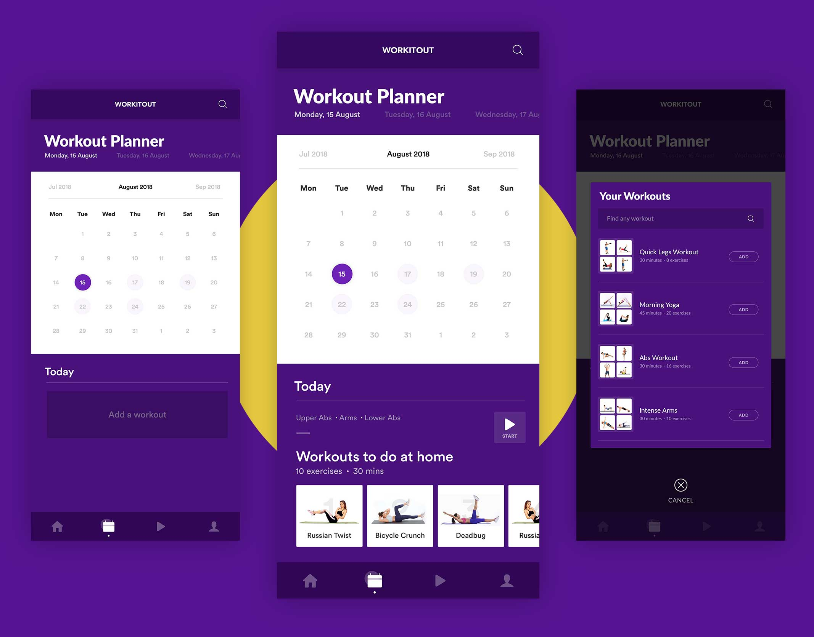

Add to board
Browse through exercises and add the
exercises you like to your workout board
exercises you like to your workout board
Workitout is the pinterest for workouts. Discover all kinds of exercises targeting different muscle groups and “pin” them on your board to create your very own workout!
After creating your workout, your workout turns into a playlist that comes with timer and visual cues to guide you through your workout anytime, anywhere.
In the play mode, the app acts as an interval timer for your workout, showing you how many sets you have done, duration left and the upcoming exercises to do
One of the key screen for the app is the workout play mode as it will have the high frequency of use. For this feature, users will be working out along with the app hence colors and information architecture plays an important role in this screen.
Design 1 to Design 2
When the user is working out along with the app, the most important information is the current exercise that they are doing. Initially I used a dark background to highlight the current exercise but with the full background being just one color, it is hard for the user to find the information needed at one glance while they are exercising at the same time. In Design 2, I separated the screen to 2 components, namely the current and the upcoming sections.
Design 2 to Design 3
As users tend to focus more on white colors, I inverted each section’s background color to give the current focus a neutral background.
Design 3 to Design 4
Finally, since the 2 separate sections represents current and upcoming elements, I moved the progress bar from the bottom section to the current section as it is indeed a representation of the current progress, to harmonize the information hierachy.
Create a workout schedule by adding workouts you have saved or created into the in-app calendar. This is basically your workout diary and your one-stop app to refer for all your work out information! Plan away and start losing that weight!
